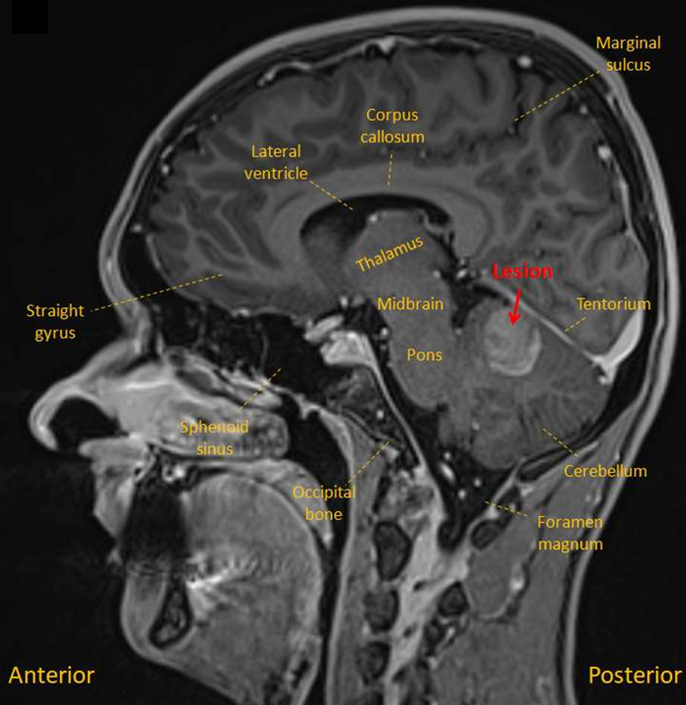
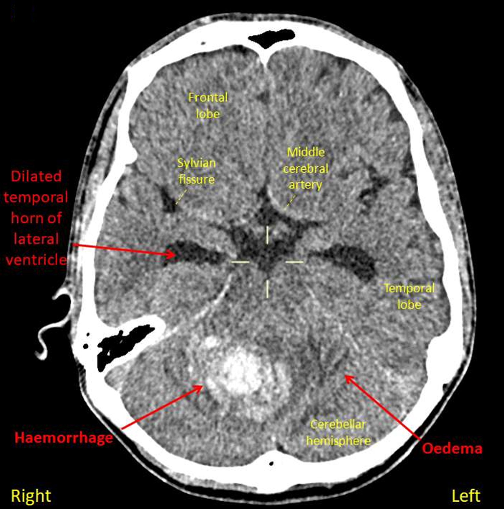
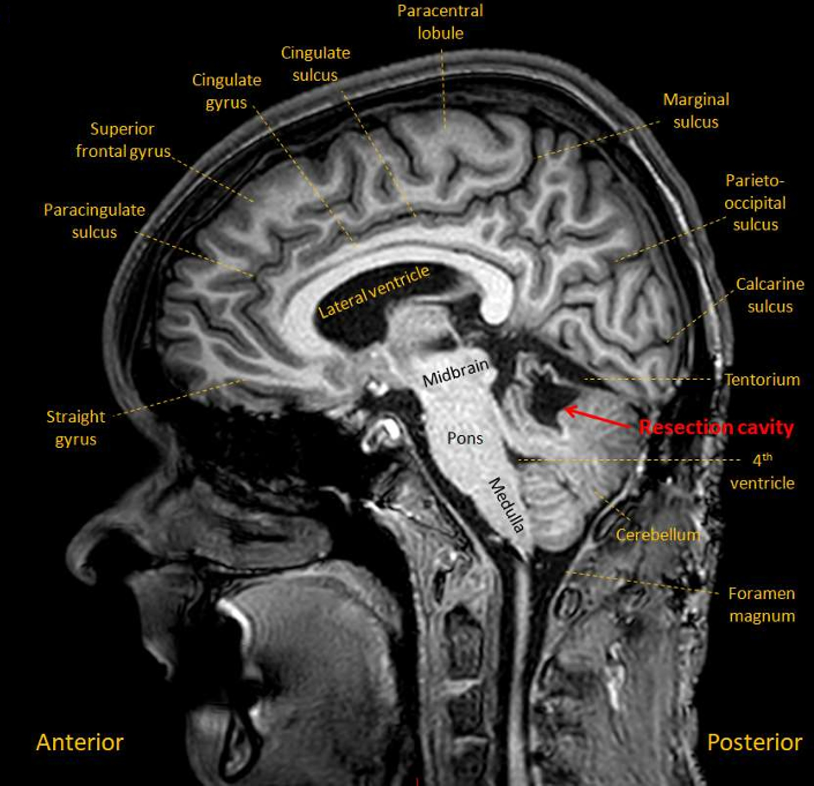

Case 2. Clumsy hand
Outcome
MRI showed a lesion in the right cerebellar hemisphere, with appearances suggestive of a recent haemorrhage surrounding an underlying lesion (sagittal MRI shown below) . A differential diagnosis was suggested, including tumour, but the imaging was thought most likely to reflect an underlying cavernoma.
The patient was stable, so no immediate intervention was needed. He remained under follow-up with plans for a repeat MRI, in the hope that as the haemorrhage resolved the lesion would be more clearly visible.
However, he deteriorated 5 weeks later, with headache, vomiting, vertigo, worsening ataxia (walking as if drunk), and dysarthric speech. CT imaging showed hydrocephalus developing.
He had an external ventricular drain inserted, and in the following days had a posterior fossa craniotomy and removal of the lesion, which was confirmed to be a cavernoma.
He experienced gradual recovery in the following months, though still had some residual issues on examination at follow-up 6 months later. A sagittal MRI following surgery is shown below, with the resection cavity visible.
18 months later, the patient has good use of the right arm, still experiences minor difficulties in writing, and in reaching for objects (e.g. glasses of water). He had residual difficulties with the sports he used to play.
Final diagnosisAtaxia and subsequent hydrocephalus due to cerebellar haemorrhage from underlying cavernoma
Key points
Return to Cases